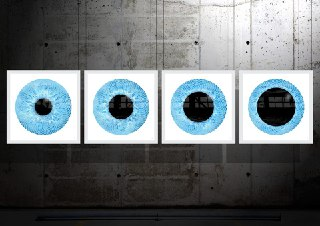

ДОБ (2,5-диметокси-4-бромоамфетамин).
Наркотик был синтезирован Александром Шульгиным, которого можно назвать королем психоделиков. Говоря об этом в-ве стоит упомянуть DOI, DON, DOM и прочие DO- в-ва, ведь они могут оказаться на вашей марке. В целом они отличаются продолжительностью действия. ДОБ и его производные куда жестче, чем многие психоделики. Однако стоит заметить, что многие в-ва , принадлежащие ряду психоделиков, могут кардинально отличаться по действию. Конечно, существуют его отдельные модификации с пиком действия через пять часов после приема, действием от 30 часов! Просто представьте себе это, вас держит 30+ часов в галлюцинациях. Надеюсь, что у вас никогда не будет такого психоделического опыта. ДОБ имеет низкую токсичность для тела и для мозга не токсичен абсолютно. Существует лишь вероятность появления психических расстройств, как шизофрения, депрессия и.т.д, если существует к ним предрасположенность. С бэдтрипов снимаются нейролептиками (аминазин, труксалом), для облегчения можно также использовать феназепам в количестве 3-5 таблеток в дозировке 0001 г/таблетка. ДОБ сужает сосуды на теле, а это в течение долгого времени может привести к возникновению гангрены. К счастью, речь идет не об одинарной дозе, а как минимум х30 дозировке. Обычно его продают в виде марок и таблеток. Найти можно на рампе, можно и у барыги во дворе, только будет это куда дороже, скорее всего. В целом принимать данное в-во стоит лишь в том случае, если вы хотите пережить ощущения куда более сильные, чем от других психоделиков. Также настоятельно рекомендую почитать трип-репорты и сделать уже окончательный выбор. Стоит ли что-нибудь о ситтере вообще? Разумеется, он здесь необходим, ведь не факт, что вы сможете себя контролировать и отдавать полный отчет своим действиям.